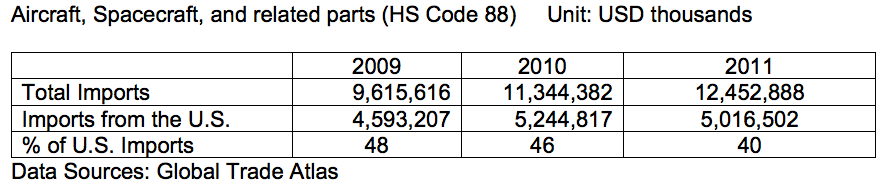

China is one of the world's fastest growing civil aviation markets. The industry has grown at double-digit rates for several years. Industry forecasts expect growth to remain strong over the medium term, averaging 7 percent over the next 20 years.
In order to keep pace with demand, China is forecast to require 5,000 new aircraft valued at $600 billion over the next 20 years. Most of these will be single-aisle aircraft designed for short-haul domestic travel. Commercial opportunities in the civil aviation market include final assembly and tier-one suppliers, small niche parts manufacturers, airport design and construction companies, and general aviation among others.
The Chinese face three key challenges that threaten to limit this growth: inadequate infrastructure, overly restrictive airspace, and limited skilled human resources. In November 2010, Chinese military and civilian authorities issued a joint statement outlining liberalization of airspace below 4,000 meters (13,000 feet) by 2020. Personnel training and capacity building are a priority for regulators, airlines, airport operators and manufacturers. U.S. firms often use training programs to establish productive partnerships with Chinese clients. Associations such as the U.S.-China Aviation Cooperation Program (ACP) can serve as valuable vehicles for smaller firms to leverage similar opportunities.